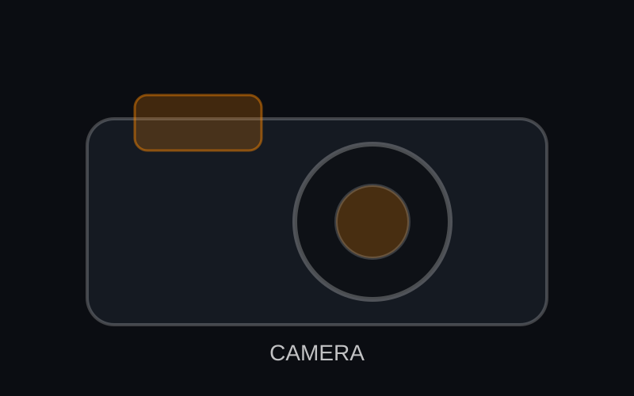

Камери
Безогледални, DSLR, компактни и хибридни тела.
Магазин за фотографска техника — камери, обективи, стативи, осветление и още
Добре дошли в модерен магазин за фотография, създаден за творци. От бързи фиксирани обективи (f/1.4) до здрави туристически стативи, предлагаме надеждна техника, която ви помага да уловите момента — вместо да се борите с настройките.
Забавна проверка на HTML ентитети: 5 стъпа стабилизация, © 2025 и „RAW & JPEG“ са написани с кодове.

Безогледални, DSLR, компактни и хибридни тела.

Бързи обективи, зуумове, макро и кино обективи.

Карбонови туристически, студийни стойки и флуидни глави.

Спийдлайтове, софтбоксове, LED панели и модификатори.
Това е вградена страница, която използва <iframe>, за да симулира рамка.
Научете повече за реални системи и стандарти за монтаж: Обектив, Статив, и Фотографска светкавица.